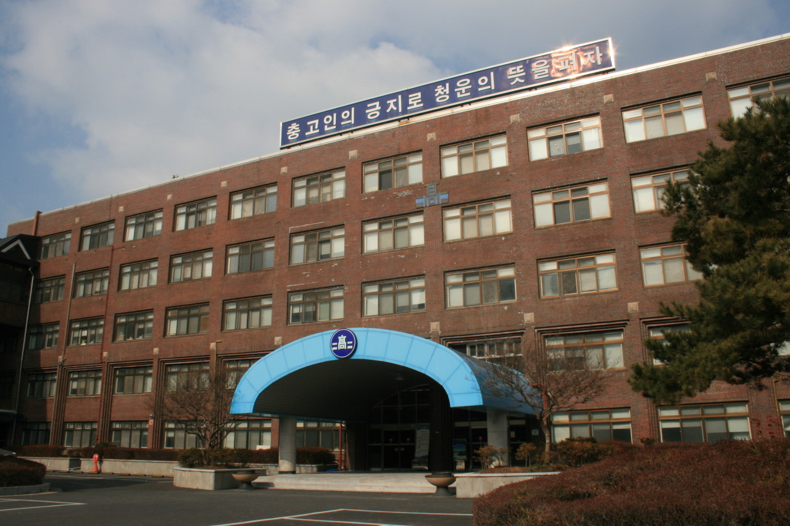

도심임에도 불구하고 운동할 만한 넓이를 갖춘 것은 다행이다. 옆에 있는 대전탄방중학교에는 운동장이 없다시피해서 중학생들이 운동하러 오기도 한다. 다만 모래가 거칠고 불규칙해서 운동하는데 방해가 되며, 모든 모래밭이 그렇듯이 여름에 엄청나게 더운 건 덤. 예전에는 현재 급식실이 있는 건물까지 운동장이었으나 2002~3년경 해당 부분을 짓게 되면서 운동장이 좁아졌다. 운동장이 도로와 인접해 있는데, 운동장의 지대 자체가 낮고 울타리와 조경으로 가로막혀 있다. 따라서 공 등이 도로로 넘어간다면 정문을 나가 돌아서 찾아와야 한다. 교문과 급식실 방향을 높은 펜스가 막고 있어서, 웬만해서 급식실 유리창에 공이 맞지 않는다. 급식실 유리창을 얼마나 깨먹었으면... 운동장 옆에 금색 로봇 동상이 있다. 엉덩이가 매우 크고, 한 손으로 스테인레스 공을 들고 있다. 통칭 오리아나. 운동장에 있는 거라곤 농구골대 몇 개와 축구골대, 평행봉 몇 개 말곤 없다. 그래도 할 건 다 한다. 또한, 운동장에서 학교 뒤로 돌아가자면 진짜 여유공간이 별로 없어서 좁은 길을 걸어다녀야 한다. 스프링클러가 설치되어 있어 여름에 더우면 물을 뿌리기도 한다.